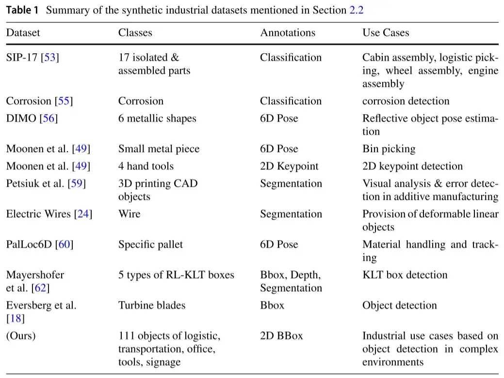
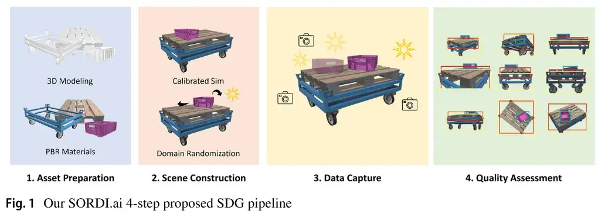
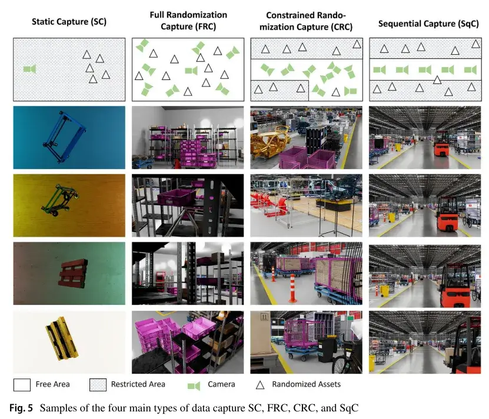
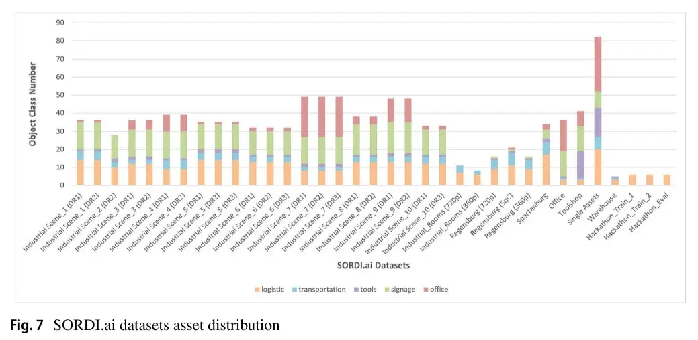
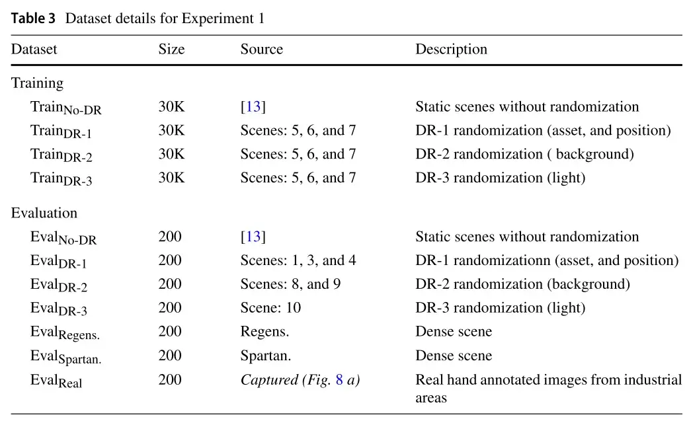
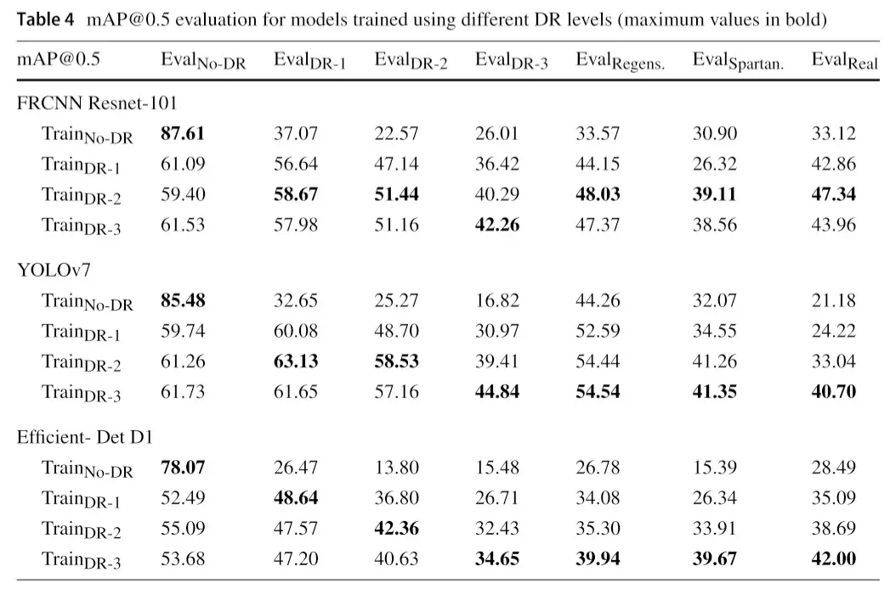

资源
正文
SORDI.ai: large-scale synthetic object recognition dataset generation for industries
SORDI.ai：面向行业的大规模合成对象识别数据集生成
Abstract
智能机器人在协助制造单位（如工业 4.0）内的人类工人方面发挥着至关重要的作用，它使用计算机视觉（CV）应用的深度学习（DL）模型来感知和分析周围环境。一方面，训练 DL 模型需要大量的注释数据。另一方面，公开可用的工业数据集的稀缺性和特殊性以及在工业设置中捕获和注释真实的图像的伦理、隐私、技术和安全挑战提出了寻找替代方案来训练 CV 应用的 DL 模型的问题。在之前的工作中，我们提出了一个基于模拟的合成数据生成（SDG）管道，使用 NVIDIA Omniverse 渲染八个工业资产的 200，000 张图像。在这项研究中，我们利用 SDG 管道来构建和维护动态和模块化场景，从而生成大规模复杂的工业仿真场景。此外，它们还具有域随机化（DR）功能，以增加内容的可变性，从而弥合现实差距。灵感来自于真实的装配线、生产区、储藏室、仓库、办公室的设置等，我们广泛地渲染逼真的图像，丰富的变化，能够将 DL 模型推广到新的看不见的环境。因此，我们引入了 SORDI.ai，这是一个用于对象检测应用的综合工业图像数据集。它包含超过一百万张图像，涵盖了物流，运输，标牌，工具和办公资产的一百多个对象类别。出于评估目的，我们使用我们的合成数据集训练对象检测 DL 模型，并在包含真实的/合成图像的目标数据集上进行推断。我们逐步测试了不同级别的 DR，以证明现实差距是如何弥合的。之后，我们展示了混合多域训练数据集以实现更好的泛化的重要性，以及我们的 SDG 管道在低真实的数据状态下提高预测精度的效率。
Keywords Industry 4.0 · Object detection · Reality gap · Simulation · Synthetic data
1 Introduction
世界各地的制造单位使用智能机器人执行明确定义的任务，并协助人类工人完成日常仓库，生产，装配和物流任务，从而缩短工业流程时间，优化成本并提高质量[1-4]。计算机视觉（CV）任务（例如，图像分类、物体检测等[3-6]）在使智能机器人感知和理解其周围环境方面发挥着至关重要的作用，使它们能够准确地定位和识别给定场景中的特定物体[2]。**正如多年来所证明的那样，深度学习（DL）在广泛的 CV 应用中优于传统的基于学习的方法[7-9]。然而，训练 DL 模型需要捕获，存储和注释大型图像数据集[10]。**此外，这些训练数据集应包含高质量的图像，这些图像应多样化，平衡，信息丰富[11]，并遵守道德准则，包括隐私，同意等原则[12]。在工业背景下（例如制造单元，装配线），**获取和注释图像是具有挑战性的，因为它耗时，容易出现人为错误[13，14]，并受到道德[12]，隐私和安全法规[15，16]的限制。**一方面，多年来的几项研究提出了工业 CV 应用的真实的图像数据集[3]。另一方面，大多数都不是公开访问的，或者即使可用，由于其特定于任务的设计，资产/对象的数量也有限[3]。
如[13，17，18]所述，合成图像数据生成（SDG）[19-21]可以解决工业环境中出现的上述挑战，同时生成具有所需属性的大型图像数据集。文献中提出了几种 SDG 方法[22- 24]。在这项研究中，我们考虑了基于模拟的方法，该方法包括一个自动化过程，用于渲染和准确注释虚拟场景中的大量合成图像，其中包括被随机资产和干扰物包围的主要感兴趣对象[18- 21，25-28]。主要用于训练 DL 模型的合成图像被认为是源域。然而，在真实的工业环境中捕获的真实的图像，主要用于推断，被认为是目标域，相当于评估或部署域[18]。这两个领域之间的差异被称为现实差距，sim 2 real 差距，或更广泛的术语，域差距[13，29-31]。许多研究提到，SDG 取决于两种基本方法：图像现实主义（IR）和域随机化（DR）[18，24，32]。IR 通过增强合成图像的照片现实主义方面来弥合现实差距[18，33，34]。然而，DR 将模拟组件和资产随机化，同时将真实的世界视为该模拟的随机实例[19]。
为了弥合现实差距，IR 和 DR 必须结合在一起，特别是通过提高渲染质量仅依赖于图像照片真实感是昂贵的[35，36]，并且与人类感知相反，真实感并不总是有益的 CV [3]。然而，DR 必须谨慎实施，其方式不会降低视觉保真度组件，例如资产可能的真实纹理和表面，这会导致更高的现实差距[18，37-39]。在雅阁中，研究人员认为，包括领域知识会导致结构化 DR（SDR），生成更好的数据，因此，它通过学习资产之间的关系来提高模型的性能和准确性[17，18，37，40-48]，特别是在应用随机 DR 可能会将模拟场景变成混乱和不现实环境的大规模场景中。据我们所知，大多数可用的 SDG 工具[18，25-28，49-52]不适合大规模场景创建，例如构建真实和装备齐全的工业区，房间和建筑物。
**然而，从大规模场景中渲染图像可以增加图像多样性和背景真实感，从而产生具有丰富多类注释的更大数据集。**此外，它允许在复杂和拥挤的环境中进行物体检测，用于物体运输、智能导航、仓库和库存管理、供应链和规划优化等。然而，现有的工业数据集[3,18,24,49,53-62]是为特定任务设计的，因此它们不涵盖广泛的工业资产。在之前的一项研究[13]中，我们提出了一个可持续发展目标管道，并渲染了 20 万张图像，涵盖了 8 个带注释的工业资产。
在本文中，我们通过（1）实现通用场景描述（USD）管道的互操作性和模块化特征[63，64]来增强和扩展所提出的 SDG 管道以进行大规模生成，以保持从最小的 3D 模型到受真实世界环境启发的较大场景组合的真实感，以及（2）利用 DR 在工业领域的领域知识来创建一个广泛的基于 SDR 的模块化组件库，这些组件用于我们所有的模拟中。**因此，我们引入了 SORDI.ai，这是一个用于工业对象检测用例的数据集，其中包含 111 个带有边界框（bbox）注释的工业资产的超过 100 万张照片级真实感路径跟踪渲染图像。**SORDI.ai 涵盖 20 个场景，包括各种工业环境，如仓库，储藏室，办公室，生产/装配线等，和真实世界的工厂复制品。此外，在第一个实验中，我们研究 DR 如何弥合域差距，以及在拥挤和真实的世界环境，如工业区的目标检测任务的背景随机化的效率。此外，在第二个实验中，我们分析了相机视口随机化的效果，以及混合多域数据集以提高 DL 模型泛化能力的重要性。此外，我们强调合成数据的提升效应，以提高低数据状态下的检测精度。
本文的其余部分组织如下：首先，我们在第 2 节中介绍了最先进的主要 SDG 概念，与 IR 和 DR 相关。然后，在第 3 节中，我们介绍了我们的 4 步 SDG 管道。此外，我们在第 4 节中介绍了我们的数据集 SORDI.ai。在第 5 节中，我们演示了我们在 SORDI.ai 中采用的 DR 方法如何影响 DL 对象检测模型的性能，以及它们如何逐渐弥合源域和目标域之间的差距。最后，我们在第 7 节讨论了一些限制/未来的工作，并在第 8 节结束。
2 Related work
在本节中，我们将回顾与 SDG、DR 和可用的工业 CV 数据集相关的最新工作。
2.1 Domain randomization & SDG toolkits
领域随机化和 SDG 工具包
Morrical 等人将 DR 分为 3 种主要类型[50]：DOME[19,20,65]、MESH[62,66] 和 FAT[21]：这些方法包括通过将感兴趣的对象放置在随机纹理表面上或放置在充满现实资产的密集背景前，对其周围的资产进行完全 DR。因此，DR 改进了神经网络（NN），以学习感兴趣对象的重要特征。然而，之前的 DR 方法以不切实际的方式随机化资产，这不适合有组织和结构化的工业环境[2]。工业环境是先验已知的[18]，与大规模数据集中使用的现实世界环境（如 MS COCO[67]）相比，它的通用性较差，因此在模拟中更容易更好地定义[18]。例如，Rutinowski 等人在[17]中展示了他们的真实数据集创建框架，以及在仓库内放置不同类型的托盘和小型载货车（KLT）箱、网箱、桶和叉车的不同可能场景。此外，他们描述了托盘（空和满载）的不同行为，并且在场景中没有表现出任何颜色或色调的变化。同样，我们将可持续发展目标的 DR 与工业领域的领域知识相结合，将结构和背景强加给我们的场景构图，弥合现实差距。通过这种方式，NN 考虑了每个资产的周围环境，并学习了资产关系，从而获得了更好的准确性，如[18,43,45–47,49]所示。
**此外，DR 方法随着时间的推移而改进[65]，因此许多研究人员在其基础上构建并扩展了几个自动化 SDG 工具，如 CAD2Render [49]，Kubric [25]，BlenderProc [26]，NDDS [27]，NViSII [50]，Unity Perception [28]，Omniverse Replicator [51，52]，BlenderGen [18]等。**现有的工具和方法不能提供与我们的可缩放和模块化方法相反的大规模场景构造和随机化 SORDI.ai，在所述可缩放和模块化方法中，我们确保专家协作以考虑到每个 3D 资产的所有微小细节和先前提到的所有真实性方面来贡献于相同的“校准的”模拟场景。之后，校准过的 sim 卡将扩展为广泛的 SDR，以便它可以渲染高质量和逼真的工业图像。
2.2 CV for industry
在最近的综述[3]中，Naumann 等人列出了基于 CV 的物流和仓库相关应用。但是，我们注意到，每个工业应用程序都侧重于特定的资产，如托盘，小型负载搬运箱，集装箱或叉车。此外，只有不到 10% 的数据集是公开的。因此，我们得出结论，工业领域数据稀缺，现有数据集覆盖单一或小类别资产，与 CV 基准和丰富的数据集 MS COCO [67]，Cityscapes [68]，ImageNet [69]等相反，或者我们建议的 SORDI.ai 数据集。
**具体来说，研究人员通过在随机背景前或在完全 DR 环境中对其进行随机化，为每张图像渲染一个工业零件或资产。**例如，朱等人发表了 SIP-17，这是一个包含 33000 张单资产图像的数据集，涵盖了 6 个工业用例的 17 个工业对象，如气枪、锤子、钩子、轮子等[53,54]。合成腐蚀数据集包含 270 张训练图像，用于检测工业装置和产品上的腐蚀[55]。工业金属物体（DIMO）的数据集包括 553800 张 6 个金属物体的图像，例如具有不同形状和材料的圆柱体、块体、轴等，并将 71 种纹理和光随机化组合应用于 600 个不同的场景，随机设置物体形状、材料、载体、构图和照明[56,57]。Moonen 等人介绍了他们的 CAD2Render 照片级真实感 SDG 工具包[49]：他们导入 CAD 模型并用随机纹理对其进行抛光，然后在表面上施加锈迹或划痕，然后将其放置在随机环境和路径跟踪渲染图像中。作者渲染 20000 张可供挑选的小金属片图像，以及 80000 张 4 种工业工具（螺丝刀、锤子、扳手和组合扳手）的图像。Petsiuk 等人使用 CycleGAN 扩展了他们的 SDG 管道[58]，并将涡轮机、齿轮、底盘和支架等 3D 打印部件的真实（测试）图像转换为合成域，以提高仅在合成数据上训练的分割模型的性能。然而，所提出的方法仍然需要收集真实数据来组成训练的真实域[59]。Dirr 等人提出了一种管道，用于渲染物理上精确的电线图像进行分割。作者为配置用例的容器内多达 6 根具有多种变形的电缆制作了 96000 张分割图像，并为电缆基准制作了 5000 张图像[24]。PalLoc6D 使用 3 个级别的 DR 提供 200000 张具有基于物理的渲染（PBR）逼真纹理的逼真 DIN EN 13698-1 EPAL Euro 托盘（EPAL 1）模型的图像[60,61]。Mayershofer 等人使用类似物体的干扰物渲染了 5 种 KLT 盒子的 8200 张图像[62]。Eversberg 等人在[18]中研究了 DR 对真实感的影响，他们在从 MS COCO 数据集或应用领域随机选择的背景图像之前渲染了 5000 张涡轮机叶片的图像，这些图像应用了 MS COCO 的不同纹理变化、随机、真实和真实的材料图像。然后，他们用 YCB 工具分散了涡轮机的注意力[70]。

简而言之，现有的工业数据集（表 1）不包括用于场景分析用例的制造单元内部工业环境的图像。它们专注于捕获放置在不同表面上和不同光照条件下的单个或一小组资产，例如，有利于单个资产或特定资产对象识别和 6D 姿态估计。相比之下，我们提出的数据集包括带注释的工业环境图像，这些图像由 20 个场景渲染而成，这些场景包含物流、运输、工具、办公室和标志资产，这些资产的放置方式与现实世界的场景相似。
3 Synthetic data generation pipeline

在本节中，我们将介绍我们的合成图像数据生成 SDG 管道。如图 1 所示，我们提出的管道由四个主要步骤组成：（1）资产准备，构建用于（2）场景构建的 3D 资源库。这些场景的灵感来自于真实的世界设置，用于（3）数据捕获以渲染逼真和注释的图像。之后，（4）质量评估步骤提高了我们渲染数据集的质量。每一步都在后面的小节中详细介绍。
3.1 Asset preparation
在本节中，我们介绍了工业仿真资源库的创建。它包含 3D 模型，纹理，材质和布局，这些都被导入到 USD 管道中以构建我们的 3D 场景，包括：
-
手工建模行业特定资产：**USD 管道允许团队成员的分散化，使专家能够就同一参考模型进行协作，同时实时更新所有变化，独立于数字内容创建（DCC）工具[63]。**我们使用 Blender、虚幻引擎和 Adobe Substances 制作了具有精细细节和逼真表面的工业 3D PBR 模型。如附录 A.1 所述，资产 3D 模型的高清晰度和逼真的 PBR 表面缩小了现实差距。这些资产符合国际工业标准，例如德国汽车工业协会（VDA）。
-
已转换资产：我们将现有的 3D 网格模型转换为 USD 格式，并将它们包含在同一个项目中，因为 USD 的互操作性允许将最新的 DCC 软件集成到工作流程中。
-
公开可用的开源资产：我们使用了开源社区的某些免费资产。
资产类别 我们为资产定义了一个 5 层分类法，如图 2 所示。在第一层（资产集群）中，我们将资产分为 5 个集群：物流、运输、工具、标牌和办公资产。在第二层（资产族）中，我们确定资产的一般功能或类型，如存储，容器，机械工具，电动工具等。第三层（资产抽象）表示对象的类或类别，而不指定任何特定的属性或细节。它封装了一组共享共同特征或属于同一类别/资产家族的对象。在第四层（资产）中，与第三层中的通用资产相比，我们定义了对象的更全面和更具体的表示、版本和变化，例如，KLT 框的不同形状标准：L-KLT 4147、L-KLT 6147、L-KLT 3147 等。最后但并非最不重要的是，第五层（资产状态）表示对象的行为或状态，例如它是满的、空的、打开的还是关闭的。完整的树分类法可在线获得：https://www.sordi.ai/tree。
3.2 Scene construction
一个大规模的多功能数据集需要大量的虚拟场景。为了轻松维护和升级 SORDI.ai 中的场景，我们在本节中介绍了我们对场景模块化和组合的 USD 适应-它通过将许多“模块化”的较小场景组合成更大更复杂的聚合场景来创建 3D 场景。[63，64]（参见图 4）。
场景随机化 为了扩展我们的图像生成管道以满足各种工业用例的需求，我们必须生成大量具有各种场景和参数的合成图像。如附录 A 所述，DR 利用静态场景到具有各种组合的动态场景。在我们的数据集中，我们考虑了三个水平的随机化：DR-1，DR-2 和 DR-3。
对于 DR-1，我们基于可见性随机化组件创建了一个随机化资产库和资产组（语义上相互关联的多个资产[48]，如图 1 中的 KLT 箱、托盘和推车），试图生成所有可能的逻辑组合，如图 14 中的堆叠 KLT 箱，以及可能的资产行为和外观。然而，单一资产的变化是有限的/受限制的，并由官方 VDA 标准对资产的尺寸和形状进行调整，以保持我们场景的真实感。然后，我们将所有组成的组放置在场景中，然后除了偏航旋转随机化外，还应用于 x 和 y 位置。随机化范围设置为预定义区域，以避免资源冲突。此外，我们忽略了 z 轴随机化，以考虑物理重力效应并避免浮动资产。然而，一些随机化的资产组可以用 z、滚动或俯仰的非零值生成，例如倾斜或堆叠的对象等。我们在接下来的段落中详细介绍了这些情况。因此，简而言之，我们保持了场景内容的现实主义。
至于 DR-2，我们还随机化了墙壁、地面和天花板的材质和参数化纹理，以模拟背景变化。我们使用了从 NVIDIA 的 vMaterials 集合中选择的 320 种材质定义语言（MDL）材质[71]。该系列的特点是油漆，石头，石膏，织物，金属，混凝土，木材，纺织品和许多其他材料，具有各种反射率，发射，不透明等效果[72]，如图 3 所示。最后但并非最不重要的是，我们在 DR-3 中包括光源的颜色、强度和旋转随机化，如图 3 所示。在表 2 中，我们比较了不同 DR 水平之间的差异。
场景合成 基于 USD 的场景模块化特征[64]，我们构建了一个 9 层架构，以确保大型复杂场景的合成，而无需每次从头开始（见图 4），具有资产可重用性的优势。此外，使用其他场景中的相同组件可以保证我们场景的工业环境一致性：
- 组成部分：它是定义为“子”资源的最小 3D 对象，用于构建父资源，如螺钉、轴、轮子、垫圈、管道等。每个组件表面都使用其相应的 PBR 材质和纹理进行“抛光”。
- 组件组：用于在较大的“SORDI 资产”中创建重复出现的组件的组合/集合。
- SORDI 资产：使用组件组和组件组装的精细 PBR 资产-这导致具有多个表面的精细和复杂的工业资产，这些表面以前很难组合和建模[49]。此外，该资源还使用环境光遮挡和适当的纺织品密度贴图进行纹理化，以确保纹理细节真实地渲染。在此阶段，资产获得其行为状态和功能角色。
- 随机资产：TheSORDIasset 通过引入预渲染的纹理和形状变化来演示外观随机化。
- 标记的资产：在此阶段，资产被标记为其适当的资产（对象类）ID 和名称作为对象检测注释。作为输出，相同随机化 SORDI 资产（检查第 4 层）的所有外观变化都被命名并与相同的标记相关联。
- 抽象资产随机化：它由用于内容随机化的多个层组成，相当于资产分类的第 4 层和第 5 层。因此，我们随机化同一通用抽象资产的不同版本和行为。然而，每个行为或状态具有来自前一层的其自己的标签，例如，stillage_open、stillage_close、stillage_full 等。然后，我们在这些类型的釜馏物之间进行随机化。因此，当将其生成到虚拟场景中时，资产将在不同的行为、版本和平台表面之间交替。
- 资产组：由物理、语义和功能关系链接的不同上下文特定资产的组合。例如，在一个实施例中，例如，产生“托盘上的 KLT 堆叠”的资产组将导致 KLT 堆叠组成的不同变化，如图 14 所示。依次地，变换随机化被附加地应用于上层/父层/对象。
- 数字舞台：在 USD 模块化的基础上，资产组与其他组一起生成，以形成逼真的环境，等等。这具有可扩展和不断增长的场景组，用于大规模场景合成。此外，值得一提的是，所有资产都是通过引用产生的，因此下层的任何更改都会传播到所有上层，实时更新所有资产组和数字舞台场景。
- 预处理场景：它是由多个子场景组成的最终预处理场景，用于渲染合成图像。
**附加说明：我们之前提到，变换随机化只会影响 x、y 和偏航轴，以保持场景的 SDR、物理和真实感。例如，可以生成靠墙倾斜的资产组，因此通过运行资产组的平移随机化，它将靠墙的许多位置。**因此，当检查其世界坐标时，滚转和俯仰值可能不等于零。或者在另一个场景中，我们可以在货架或机架上生成资产组，因此其世界 z 轴值可能大于 0。
另外，值得一提的是，衍生资产的随机化效应是异步的。换句话说，如果随机化资产有 n 个变异，则随机化资产产生两次或 m 次将分别导致 2×n 或 m×n 个变异，从而导致更大的组合多样性。相比之下，同步随机化将同时保持所有相同衍生资产的相同变化，从而导致仅针对 m 个衍生资产的 n 个变化。
3.3 Camera randomization, data capture & annotation
3.3 相机随机化、数据采集和注释
相机也是场景中显示虚拟环境和渲染照片级真实感图像的重要资产。在我们的数据集中，我们使用了 NVIDIA ARTXGPU 的路径跟踪渲染算法。然而，作为普通的 3D 对象，相机也具有 3D 特征，例如可见性，位置和旋转。因此，场景中的相机移动和行为会影响数据捕获。如图 5 所示，我们定义了四种主要的数据捕获类型：

-
静态捕获（SC）：它包括将相机固定在静态位置和旋转。在这种情况下，DR 是必须的，否则，在每帧渲染相同的图像。
-
完全随机化捕获（FRC）：它包括在场景房间中的任何点随机化相机的源点和目标点。这使相机视角多样化，例如高角度和低角度、倾斜视角、长距离和近距离拍摄、空中拍摄等。
否则，仅随机化相机目标将像一个人站在相同的位置环顾四周，并且仅随机化相机源会导致盲区。简而言之，相机被放置在整个 3D 场景中，并且它指向随机位置。
-
约束随机化捕获（CRC）：它类似于 FRC，但摄像机的源点或目标点在特定区域内是随机的，例如，我们忽略了高度密集区域内或人类或机器人无法访问的封闭资产内的捕获。这些视点的图像与训练无关。此外，我们配置摄像机的目标点，以忽略捕捉虚拟场景的空白区域，如天花板。
-
顺序捕获（SqC）：图像是用固定在机器人上的摄像机在真实的场景中观察和捕捉的相同距离和角度（视点）渲染的。例如，在自主移动的机器人（AMR）的情况下，虚拟相机被放置在离地面固定的距离处，并且移动通过明确定义的路径，因为它被固定在导航场景的运输 AMR 上。（参见第 5 节）。
除了渲染图像，Isaac Sim 还生成了准确的注释，如 bbox 2DTight [73]。
3.4 Quality assessment
作为最后一步，质量保证会影响图像及其注释。因此，我们实施了多种算法来删除：
-
重复或高度相似的图像：我们使用图像哈希的曼哈顿距离来测量图像相似性，如[13]中所实现的。两个图像之间的距离越小，两个图像越相似/相同。
-
固体资产的近距离拍摄图像：固体资产没有任何间隙或穿孔，因此，它不允许通过其网格的可见性，如图 6a 所示。因此，我们丢弃固体资产的 占用超过该图像的预定义阈值的图像：
其中 是 或渲染图像的表面积， 和 是相应的宽度和高度。此外，最大占用等于 1，并且它对应于完全覆盖图像的固体资产。
-
非信息性图像：我们将没有任何注释资产（没有任何 bbox）的区域视为非信息区域，例如房间的组件（墙壁、天花板、地板）、未标记对象的高度遮挡等。因此，如果非信息区域超过预定义阈值，我们将丢弃图像，如图 6b 所示。
-
面积为零的 bbox：当 bbox 的上下坐标或左右坐标相等时，就会产生面积为零的 bbox。在这种情况下，我们从注释文件中省略了相应的 bbox。
4 SORDI.ai dataset
在本节中，我们将描述我们提出的 SORDI.ai 数据集。
材质设置在 SORDI.ai 的此版本中，我们在 NVIDIA RTX A6000 48 GB 和 RTX 3090 48 GB GPU 上使用了路径跟踪渲染算法。我们使用 NVIDIA Omniverse 的 Isaac Sim v2021.2.1 渲染图像，并将 bbox 注释转换为 BMW JSON 格式[74]。除了带注释的文件夹外，我们还提供了数据集文件夹的一般性 J2EE. json 文件详细信息，如：描述，图像尺寸和类型，数据集应用程序，注释类型，支持的对象及其实例编号，场景环境，生成设置等。
4.1 Datasets detail
我们建议的 SORDI.ai 数据集包括从现实世界的工业区，如宝马的里根斯堡和斯帕坦堡工厂，除了办公室，仓库，储藏室和工具店的启发或复制的场景的照片级渲染。所有图像均为 720p，并与 bbox 2D Tight 注释相关[73]。此次发布的 SORDI.ai 包括 36 个数据集，共有 111 个注释对象类的 1,191,893 个注释图像。其他信息见附录 B。
我们没有包括任何干扰因素，考虑到我们的场景是丰富和密集的资产，因为它们的灵感来自真实世界的组成和结构。因此，通过在场景（FRC、CRC 和 S qC）内随机移动捕获相机，自然遮挡行为通过最接近的工业 3D 模型来表现。
4.2 SORDI.ai assets
我们将我们的注释资产分为五个主要类别：物流、运输、工具、标牌和办公：
- 物流 资产用于工业运营，例如，搬运、持有和储存物品，如容器、盒子、储存设备、机器人。此外，该集群还包括安全和环境设置对象，如障碍物、安全锥等。
- 运输资产由轮式物体组成，主要用于物体运输，如：千斤顶、智能运输机器人、小车、叉车等，或人员运输，如自行车、滑板车等。
- 工具通常在工具店找到，如锤子，钳子，扳手等。它们还包括安全工具，如手套，护目镜，灭火器等。
- 标牌资产包括地面标记、标牌和徽标。
- 办公室资产包括办公室固定设备、电子设备和办公室家具，包括厨房用品。
此外，我们为具有不同形状或状态的同一对象分配了不同的注释，例如，不同的 KLT 箱类型（尺寸）或货架状态（打开和关闭），如前面第 3.1 节所述。
4.3 Asset-scene correlation
在图 7 中，我们可视化了每个 SORDI.ai 数据集的 5 个资产集群（物流，运输，工具，标牌和办公室）的资产分布。这种分布反映了我们用来渲染图像的场景的内容/焦点。例如，办公室、工业场景_7 和工业场景_9 显示了办公室资产的大量使用（分别为 17、22 和 13），显示场景包含办公室风格的区域。此外，Rengensburg 和斯帕坦堡场景主要包含与装配线和生产区域相关的物流和运输资产。此外，与其他数据集相比，工具车间数据集清楚地呈现了工具资产的使用情况。有关更多详细信息，我们在附录 D 中提供了一些数据集示例。
5 Dataset performance & ablation experiments
数据集性能和消融实验
在本节中，我们进行了两组实验，以演示应用于 SORDI.ai 的 DR 技术如何逐渐弥合现实差距。出于评估目的，我们使用了交集大于并集（IoU）阈值等于 0.5 时的平均精度（mAP）（mAP@0.5）。我们使用以下培训和评估工具在配备 8 个 A100 40GB GPU 的 NVIDIA DGX 服务器上进行了实验[75，76]。

5.1 Experiment 1: bridging domain gaps
在这个实验中，我们逐步展示了 DR 如何弥合领域之间的差距，并指出了工业对象检测用例的有效 DR 基础级别。
DL 架构我们从 TensorFlow-2 Model Zoo [79]中选择了 MS COCO 预训练的 Faster-RCNN（FRCNN）Resnet 101 [77]和 EfficientDet D1 [78]模型，使用 SORDI.ai 对其进行微调，并对工业设置中捕获的真实的/合成图像进行推断。我们使用了 80-20% 的训练-验证分割比，0.001 的学习率，20 个 epoch 的批量大小为 4。此外，我们使用 YOLOv 7 [80]，训练验证分割率为 80- 20%，学习率为 0.01，批量大小为 8，epoch 为 10。

数据设置我们评估了 4 个 SORDI.ai 数据集的性能，这些数据集分别具有 4 个随机化水平：TrainNo-DR [13]、TrainDR-1、TrainDR-2 和 TrainDR-3（检查表 2）。此外，为了进行比较，我们使用相同的校准模拟场景渲染了 DR-1、DR-2 和 DR-3 数据集。但是，训练集中使用的场景与评估集中使用的场景不同：每个训练数据集包含 30, 000 个图像。对于评价数据集，我们使用了 7 个不同的数据集，每个数据集 200 张图像：EvalNo-DR、EvalDR-1、EvalDR-2、EvalDR-3、EvalRegens。《斯巴达人》评估实数。我们在下表 3 中提供了数据集的详细信息。最后但并非最不重要的是，我们考虑 6 种工业资产：KLT 箱（抽象类）、推车、托盘、托架、灭火器和千斤顶。
附加说明：校准的模拟表示复制环境的第一个单个实例。这是一个校准的模拟，我们应用 DR 来扩大我们的场景变化和减少现实差距[81]。
密集场景是一个拥挤的环境，具有大量的资产，表现出高度的遮挡。由于标签是自动准确地生成到像素级的，因此远资产和区域最多可注释 1px。模型无法识别此类注释。因此，仅出于评估目的，我们将其丢弃。
真实的评估图像是在随机相机角度和不同位置捕获的-类似于 CRC（参见图 8a）。
结果本实验结果见表 4。因此，我们得出以下结论：
（1）在我们使用的 3 种 DL 架构的 EvalNo DR、EvalDR-1、EvalDR-2 和 EvalDR-3 中，我们注意到最大 mAP 靠近矩阵的对角线（其中训练和评估数据集具有相同的 DR 水平）。这一观察结果表明，降低域 gab 可以获得更好的精度：在上三角矩阵（对角线上方）中，我们注意到每列中 mAP 的增强和逐渐增加，同时添加额外的 DR 水平，直到我们达到类似的合成域。
（2）我们注意到，在 EvalRegens 上进行推断时，对最小 DR-2 的训练达到了最高的准确率。Eval 斯巴达人。以及 EvalReal。这是因为由于机械、存储和装配线复杂的设备，工厂是密集的环境，因此模型必须熟悉极端的背景变化，以支持 DR-2 的壁纹理随机化的效率。我们在表 5 和表 6 中列出了每个对象类的其他详细信息以及其他评估指标，如准确性、精确度、F1 分数和召回率结果。

5.2 Experiment 2: mixing domains
在这个实验中，我们研究了相机视口随机化对弥合现实差距的影响，以及合成数据的提升效应，以提高低真实的数据体系中的检测精度。
DL 架构 我们从 TensorFlow-2 Model Zoo [79]中选择了 MS COCO 预训练的 Faster-RCNN（FRCNN）Resnet 101 [77]模型，使用 SORDI.ai 对其进行微调，使用 80-20% 的训练-验证分割比，0.001 的学习率和 20 个 epoch 的批量大小为 4。然后，我们推断出超过 200 个在工业设置中捕获的真实的手动注释图像。
数据设置 我们考虑在 CRC 和 SqC 中捕获的相同里根斯堡密集场景的 2 个 SORDI.ai 数据集（参见图 8 b1、b2 和表 8）。每个数据集包含 8800 个合成图像，并由 2 个工业资产组成：台车和 stillage。然而，我们以 10%的步长逐渐混合了两个数据集。例如，混合比率为 10% 的数据集表示由 10% SqC（880 张图像）和 90% CRC（7920 张图像）组成的数据集，等等。我们总共训练了 11 个数据集，每个数据集有 8800 张图像。如图 8 b3 所示，在从工业区内 AMR 的角度捕获的 200 幅手工标记的真实的图像上对模型进行评估。此外，我们进行了一项比较研究，通过逐步评估使用合成数据集（SqCSynth 和最佳 CRC + SqCSynth 组合）与真实的图像数据集 SqC 真实的和真实的图像数据集 SqC 真实的本身的混合训练的检测模型，以检查我们的合成数据集在低（真实的）数据制度中提高检测模型准确性的能力。
CRC 与 SqCSynth 在表 7 的第一部分（CRC + SynthSynth）中，我们逐渐评估了数据集混合，我们注意到在整合 30% 的 SqC 数据集后，mAP 从 24.63%（r = 0%）显著提高到 32.59%。然而，在 SqC 数据集上进行训练本身（mAP = 29.90%，r = 100%）不会导致最大准确度（mAPmax = 36.98%，rmax = 90%）。另一方面，包括。我们训练的新领域数据集的 30% 能够提高模型性能并更好地泛化。
Sim2Real 目视检查 在图 8.b2 和图 8.b3 中，我们注意到图像内容方面的共同特征，因为模拟和真实的环境都有走廊，两侧都有推车、stillages、工业机架等。此外，天花板的结构也类似。尽管相机运动的一致性，我们注意到，与 b2 中的虚拟相机相比，b3 中的真实的相机更向上倾斜。此外，与稳定、更清晰和更干净（没有任何真实的颗粒）的渲染图像相比，真实的图像饱和度更低，并且呈现一些运动模糊和景深效果。
合成与真实的 在表 7 的第二部分中，我们逐步评估了合成数据与真实数据（8800 张图像）的混合与仅具有相同大小的真实数据（最多 4400 张图像），例如，在 r=10% 的情况下，我们比较了在 7920 张合成图像和 880 张实际图像上训练的模型与仅在 880 张真实图像下训练的模型。由于获取真实数据的限制，我们进行了高达 r=50% 的实验。我们注意到：
-
我们的合成数据显著提高了 themAP 的比率，高达 10%，相当于 880 张真实图像，
-
将真实图像添加到训练集中比仅使用合成数据训练的准确率更高（r=0%）。与之前的分析类似，我们注意到，考虑 CRC 数据比仅对真实图像使用 SqCSynth 数据具有更高的准确性。最后但并非最不重要的一点是，在所有列中，我们在 r=30% 后观察到 mAP 收敛[82]。
6 Additional details: object representation
在本节中，我们将提供与第 5.1 节中的实验 1 相关的更多细节。
资产分配 多个对象类可以存在于同一图像中（图 9），但是在图 10 中，我们注意到 4 个训练数据集中的资产实例出现并不平衡。这主要是因为并非所有资产都可以根据其功能作用在工业领域中平等使用[13]。例如，在一个工业房间里，一个或两个千斤顶可以覆盖运输托盘的区域。然而，KLT 盒被广泛使用，因为它们携带多个生产步骤所需的各种较小的制造部件。因此，KLT 箱可以灵活，方便地放置在许多地方：在工业货架或机架上，堆叠，旁边的装配线等，此外，我们注意到，托盘和小车分布是准相似的，由于由小车运输托盘定义的双小车关系。
可堆叠资产 我们发现，与其他资产相比，托盘和 KLT 箱的 AP 最低，因为托盘和 KLT 箱是水平和垂直可堆叠的资产。因此，有可能将多个堆叠实例检测为单个对象实例。特别是在我们的 KLT 盒检测案例中，我们考虑了超类 KLT 盒，其中包括不同大小的 KLT 盒子子资产，因此 2 个或多个较小的 KLT 框可能会与一个较大的 KLT 箱混淆，如图 14 的 KLT 箱子随机化所示。然而，我们注意到，应用 DR 可以提高可堆叠资产的平均精度（AP）。
大型资产 我们注意到，大型资产，如台车，stillage 和 jack，获得了更高的 AP，因为它们更容易检测和识别，并且没有复杂的组合或放置，主要是因为它们尺寸大，重量重，所以它们不被归类为容易操纵的灵活资产。
自然遮挡和数据不平衡 由于构建密集场景的现实世界灵感，存在多层资产。因此，渲染图像中会出现带注释的高遮挡、远（小）和背景对象，导致错误预测，如图 11 所示。例如，灭火器不是随机分布的，它们大多放置在特定的地方，比如挂在形成渲染视口背景的墙上。因此，与图 19 所示的不太复杂的无 DR 场景相比，如图 12 所示，DR-1、DR-2 和 DR-3 的训练集中存在高度遮挡的灭火器物体。此外，由于我们通常会随机化捕获摄像头源和“查看”位置，灭火器实例并不像其他可以灵活放置在虚拟场景中的频繁物流资产那样出现。
7Limitations and future work
在本节中，我们讨论了我们提出的贡献的局限性，因此，未来可能的任务来解决这些问题。
**场景更新 **第一个限制与手动工作有关，在每个基于仿真的 SDG 开始时仍然需要手动工作，以收集 3D 模型，构建校准的仿真场景，并定义 SDR 设置。此外，工业和技术更新（新的或修改的）也应纳入可持续发展目标管道，由于美元的互操作性和模块化，这更容易。然而，值得研究的是 3D 扫描和数字孪生方法，以自动构建大规模，结构化，工业校准的模拟并保持其持续的相关性。
域随机化 如前所述，工业区是一个明确界定和结构化的区域，其可变性有限。因此，许多领域都有共同的模式[48]。另一方面，根据工业用例配置适当的随机化参数是很重要的。虽然某些情况下的特点是最小的变化，其他一些情况下可能包含更高的变化。因此，作为未来的任务，我们建议为每个 DR 级别定义 DR 强度（低，中，高），并自动定义结构化随机化的过程，其中包括由 NVIDIA PhysX SDK 提供支持的物理模拟[83]。
场景可变性 此外，为了增加我们的数据集内部和内部可变性，未来的实现可能会涵盖（1）新的 DR 配置，如与相机设置相关的光学 DR，DR-2 和 DR-3 中的真实图像作为纹理，以及（2）新的组件，如交互式人类工人，新的工业对象和更新的纹理。
大规模场景 随后，我们基于 USD 的可扩展和模块化（分层）SDG 管道通过重用/生成预配置的随机化资产和数字阶段，提供了校准模拟场景的轻松升级和更新（参见图 4）。因此，可以考虑新的环境，场景和内容，从而产生更大的工业和复杂场景。然而，使用 NVIDIA Omniverse 渲染逼真的图像需要昂贵的硬件和 RTX 3090 和 RTX A6000 等 GPU。因此，有必要研究优化方法来加载大规模场景，并渲染复杂的图像。此外，值得检查生成 AI 方法以增强合成数据的真实性和质量[84-89]。
综合注释 “2D 紧密 bbox”仅覆盖已标记对象的可见部分。然而，在遮挡的情况下，一个或多个像素仍然可能存在于边缘附近（视觉上，难以感知），或者通过穿孔的前部对象。这些“泄漏”的像素导致“扩展”的 bbox。此外，我们没有过滤任何与远背景资产相关联的小边界框（零区域 bbox 除外），因为基于深度或基于区域的方法的清理阈值可以根据对象类进行自定义。另一方面，当对象的实际分割区域显著小于边界框区域时，基于边界框重叠的百分比计算遮挡率可能是低效的。例如，如果前方物体被高度穿孔（例如，stallage、jack 或 dolly），后面的物体仍然清晰可见。因此，未来的实验可能会解决（1）细化“扩展”bbox，以及（2）bbox 过滤策略。
多模态数据 我们正在考虑多模态注释，如图 13 所示：例如，用于图像分割的语义/实例分割，或用于避障和深度估计任务的深度图像[73]。提供多模态数据扩展了 SORDI.ai 的工业覆盖范围，以解决更复杂的工业用例。
模型灵敏度和评价 最后但并非最不重要的是，我们注意到 YOLOv7 和 EfficientDet-D1 模型在使用 TrainDR-3 的 EvalReal 上实现了最佳精度，而 FRCNN 的模型在使用 TrainDR-2 时获得了最大精度，其中不包括任何轻随机化。因此，除了探索新的评价指标和方法来评估域间隙之外，还值得进一步研究与域随机化相关的模型敏感性相关的实验。
8 Conclusion
在本文中，我们通过实现 USD 的 灵活性、互操作性和模块化特性，利用了我们之前在工业 SDG [13]方面的工作：我们构建了一个符合 VDA 标准的工业资产的广泛 PBR 3D 模型库。此外，通过 SDR，我们弥合了现实差距。此外，我们提出了一个 5 层资产分类，一个模块化的 9 层场景组合，以及一个 4 步 SDG 管道，用于大规模场景构建。因此，我们展示了 SORDI.ai，这是一个合成工业数据集，包含超过 100 万张真实感图像、从 20 个不同制造场景渲染的路径跟踪，覆盖 100 多个注释资产。最后但并非最不重要的是，我们研究了 DR 如何逐渐弥合现实差距，以及在训练数据集中混合 DR 水平以提高检测 mAP 的效率。我们希望这个数据集将使工业 AI/CV 和机器人技术的研究人员能够实现他们的目标，即训练适应新工业领域的更通用的模型。
Appendix A: Preliminaries
在本节中，我们简要回顾现实差距概念以及如何通过 IR 和 DR 缩小现实差距。
A.1 Reality gap
真实的世界是一个复杂的领域，包括环境和行为因素的巨大和各种组合，其中一些被认为是罕见的事件，很难重现。如前所述，CV 中的现实差距是在合成图像上训练的 DL 模型与在真实的捕获图像上训练的 DL 模型之间的性能差异[19，29-31，45，90]。此外，现实差距可以分类为[36，51]：
- 视觉差距 Visual gap 或外观/感知差距是指合成图像和真实图像之间在图像质量、颜色、真实性（特别是与真实的相机传感器相比的渲染系统的质量）以及资产的形状、材料和细节方面的差异。
- 内容鸿沟 Content gap 是指虚拟环境与真实的世界之间的对象在多样性、分布、放置、组成和行为方面的差异。
一方面，为了弥合视觉差距，其他研究通过利用具有高级渲染功能的 3D 组件来增强 IR，例如基于物理渲染（PBR）的材料，以及应用于具有高细节水平和基于物理的灯光控制的 3D 模型上的逼真纹理[18]。然后，使用路径跟踪或 iRay 等高级算法以及 multiGPU 架构中强大的 GPU 硬件沿着精确的相机模型渲染虚拟场景。此外，这些视觉组件可以随机化以概括模型并适应新的光线条件和对象状态，例如，高或低可用性标志，如划痕、灰尘等，或具有新绘制颜色或材质的新对象版本等。
另一方面，内容差距与场景组成有关：虚拟场景在资产的物理位置、功能和行为方面与真实的世界有何相似之处。更多详情请参见以下第 A.3 节。
A.2 IR aspects
有几项研究调查和加强了信息检索的各个方面，以弥合视觉差距。Tsirikoglou 等人确定了五个现实主义方面：整体场景组成，几何结构，照明，材料属性和光学效果[91]。许多研究人员专注于高度逼真的 3D 模型的重要性，这些模型看起来与真实的物体非常相似[13，18，60，61]，以减少视觉差距。此外，他们认可基于物理的渲染（PBR）方法来定义这些 3D 模型表面的视觉属性，如颜色，粗糙度，金属度等，以定义任何光线如何与表面相互作用，从而产生各种逼真表面的感觉，如木材，金属，玻璃等[18，32]。因此，使用 PBR 渲染图像会产生更好的结果，特别是当光线和场景条件更复杂时[92，93]。至于场景组成，我们在之前的出版物中强调了基于真实的工业场景和资产组成的场景内容创建的重要性[13]，并为八个工业资产提供了现实模型，以减少现实差距。
A.3 DR components
从具有静态资产的单个场景渲染图像会使 DL 模型过度适应特定的模拟实例。反过来，DL 模型不能很好地推广到随机化程度很高的现实世界实例[37]。作为一种解决方案，DR 能够利用所有虚拟场景从静态到动态环境，在动态环境中，资产根据物理、逻辑和语义约束在 3D 场景的不同位置生成或隐藏。此外，了解每个对象的功能和行为，如果通过基于知识的方法设置随机化，就可以避免不切实际的情况。这导致了“结构化 DR（SDR）”[45]，如图 14 所示。在本文的其余部分和我们的管道描述中，我们将 SDR 称为 DR，因为 SORDI.ai 中的所有资产都是以结构化的方式生成的。在本节中，我们列出了我们在可持续发展目标管道中应用的四个 DR 组件[94]：
- 纹理和材料：纹理定义了 3D 模型的（网格）外观和细节，例如，划痕、图案、颜色、凸起等，而材料决定表面的物理性质，例如，反射率、粗糙度、金属、透射率、透明度等。纹理和材料都会影响 3D 模型的视觉（真实）外观。因此，所有提到的参数都受到随机化的影响，以便推广 DL 模型在使用不同的传感器/相机和在不同的环境条件下检测更大种类的相同资产时的性能，特别是当涉及高反射表面时。
- 灯光：它包括随机化基于物理的灯光控制参数，如灯光颜色、温度、强度和方向。此外，光和材料组件是相互依赖的，它们可以相互影响。材质的属性可以导致曲面反射或吸收某些波长的光，而照明条件可以改变材质的资产表面外观，从而产生各种逼真和复杂的组合。
- 可见性：它是一种遵循对称伯努利分布的随机化，用于简单地可视化资产或在虚拟场景的 3D 空间中模糊资产。
- 变换：资源的变换设置由位置、旋转和缩放属性组成。它沿 x、y 和 z 轴沿着操纵对象的位置，围绕其枢轴点进行 3D 旋转，并分别在所有维度上更改其大小。因此，随机化位置和旋转属性会导致将对象以不同的方向放置在定义的区域中。但是，在生成或替换资产时必须考虑物理属性，以避免资产碰撞或浮动资产。
在图 3 中，我们将所有四个随机化组件组合在一个场景中，并从一个相机的角度渲染不同的图像。
Appendix B: SORDI.ai dataset details
SORDI.ai 数据集分为多个文件夹，以区分以下主要差异：场景、DR 级别、注释资产、数据捕获类型、渲染算法和数据清理。在表 8 中，除了[13]中的数据集之外，我们还提供了 35 个新数据集。